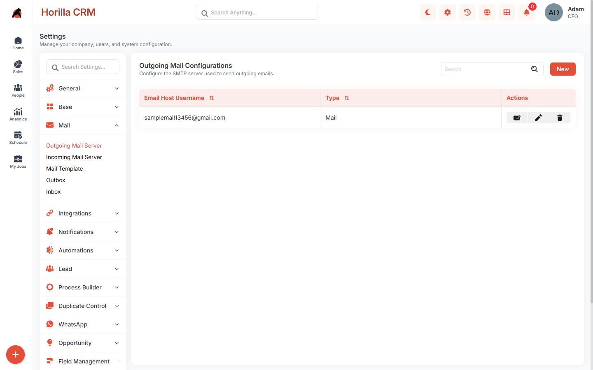
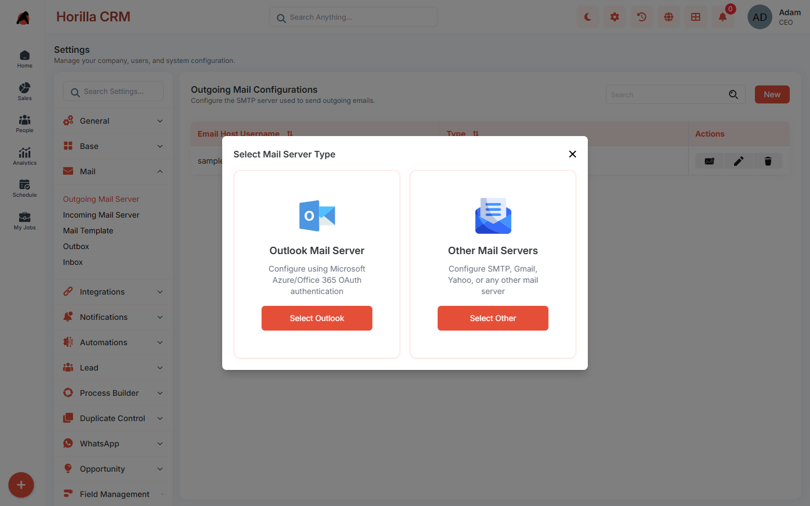
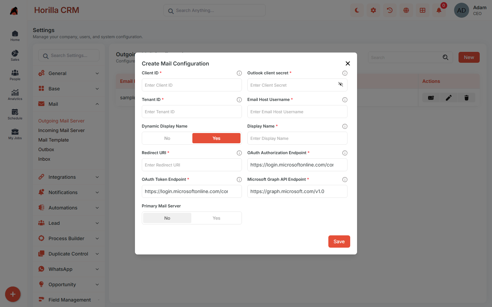
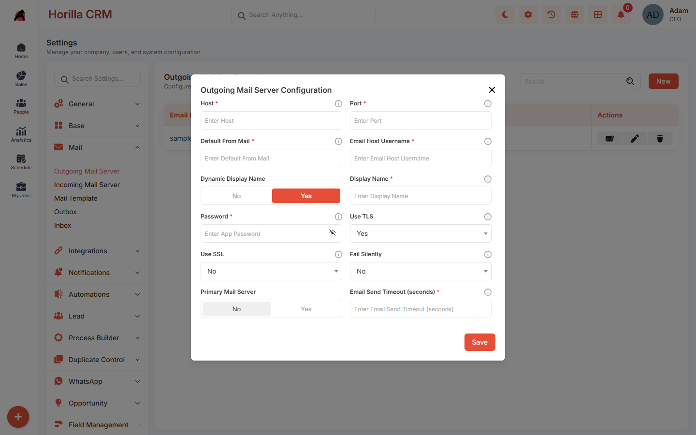

Introduction
The Outgoing Mail Configuration module is where email server connections for sending messages are created and maintained. Multiple configurations are supported, and connections can be made either to Microsoft Outlook / Office 365 through OAuth or to other mail servers through SMTP.
Key Features and Functionalities
1. Outgoing Mail Configurations Overview
Purpose: view every configured outgoing mail server in one table.
- Navigate to Settings → Mail → Outgoing Mail Server.
- The table has three columns: Email Host Username (the sender address), Type (Outlook or Mail) and Actions (the management icons).
- Use the search box to locate a specific configuration.
- Sort by Email Host Username or Type using the indicators in the column headers.

2. Creating a New Mail Configuration
Purpose: add a new outgoing mail server configuration.
- Click New.
-
In the Select Mail Server Type modal, choose one of the two options:
- Outlook Mail Server – Microsoft Azure / Office 365 using OAuth. Click Select Outlook.
- Other Mail Servers – SMTP, Gmail, Yahoo or other servers. Click Select Other.

3. Configuring an Outlook Mail Server
Purpose: integrate a Microsoft Outlook or Office 365 account using OAuth.
Selecting Outlook opens the Create Mail Configuration form.

Authentication credentials
- Client ID
- Outlook client secret
- Tenant ID
- Email Host Username
- Display Name
- Redirect URI
Endpoints
These fields are pre-populated:
| Endpoint | Default value |
|---|---|
| OAuth authorization endpoint | https://login.microsoftonline.com/cor |
| OAuth token endpoint | https://login.microsoftonline.com/cor |
| Microsoft Graph API endpoint | https://graph.microsoft.com/v1.0 |
Additional options
- Primary Mail Server toggle.
Click Save to finalise the configuration.
4. Configuring Other Mail Servers
Purpose: set up an SMTP-based server such as Gmail, Yahoo or a custom server.
Selecting Other opens the Outgoing Mail Server Configuration form.

Fields
| Group | Fields |
|---|---|
| Server connection details | Host, Port, Default From Mail, Email Host Username |
| Authentication and display | Display Name, App Password |
| Security settings (dropdowns) | Use TLS, Use SSL, Fail Silently |
| Additional options | Primary Mail Server toggle; Use dynamic display name toggle; Email Send Timeout in seconds (required) – the duration allowed for sending attempts |
Click Save to finalise the configuration.
The guide does not state specific SMTP host names or port numbers for this form.
5. Managing Existing Configurations
- Only one configuration can be the primary one. Setting a new configuration as primary removes the flag from the previous one, and the first configuration created becomes primary automatically.
-
The row actions depend on the server type:
- Outlook: Refresh token, Login Outlook, Send test mail, Edit, Delete.
- Other servers: Send test mail, Edit, Delete.
Best Practices
- Configure at least one mail server before trying to send email from the CRM.
- Designate one configuration as the Primary Mail Server for default operations.
- For Outlook, complete the Azure AD app registration and permissions beforehand.
- For Gmail and similar providers, use app-specific passwords rather than the regular account password.
- Test each configuration after setup with the envelope (send test mail) icon.
- Store client secrets and passwords securely, using the visibility toggle only when needed.
- Review and update the configurations regularly.